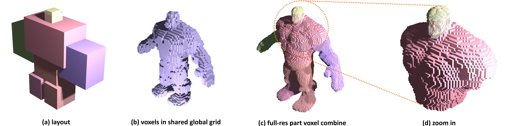

FullPart
Generating each 3D Part at Full Resolution
*Equal contribution †Corresponding author
*Equal contribution †Corresponding author
Part-based 3D generation holds great potential for various applications. Previous part generators that represent parts using implicit vector-set tokens often suffer from insufficient geometric details. Another line of work adopts an explicit voxel representation but shares a global voxel grid among all parts; this often causes small parts to occupy too few voxels, leading to degraded quality. In this paper, we propose FullPart, a novel framework that combines both implicit and explicit paradigms. It first derives the bounding box layout through an implicit box vector-set diffusion process, a task that implicit diffusion handles effectively since box tokens contain little geometric detail. Then, it generates detailed parts, each within its own fixed full-resolution voxel grid. Instead of sharing a global low-resolution space, each part in our method—even small ones—is generated at full resolution, enabling the synthesis of intricate details. We further introduce a center-point encoding strategy to address the misalignment issue when exchanging information between parts of different actual sizes, thereby maintaining global coherence. Moreover, to tackle the scarcity of reliable part data, we present PartVerse-XL, the largest human-annotated 3D part dataset to date. Extensive experiments demonstrate that FullPart achieves state-of-the-art results in 3D part generation.
(The code and dataset will be released before Nov 7th.)

Three stages of FullPart: (a) layout generation by representing bounding boxes with latent vecsets, (b) dividing each box into an isolated N^3 grid and generating coarse 3D part structure with full resolution, and (c) refinement of textured meshes based on the coarse structural foundation.

Unlike other solutions that forces all parts to share a single global representation space, which limits the resolution allocated to each part and results in poor details of small but complex 3D parts, each part in our method is generated in its own fixed grid space, enabling high-resolution synthesis for all parts regardless of their actual sizes. We also propose a specialized center-corner encoding mechanism to build cross-part contextual relations and address the challenges of resolution mismatch.
@misc{ding2025fullpart,
title={FullPart: Generating each 3D Part at Full Resolution},
author={Lihe Ding and Shaocong Dong and Yaokun Li and Chenjian Gao and Xiao Chen and Rui Han and Yihao Kuang and Hong Zhang and Bo Huang and Zhanpeng Huang and Zibin Wang and Dan Xu and Tianfan Xue},
year={2025},
eprint={2510.26140},
archivePrefix={arXiv},
}